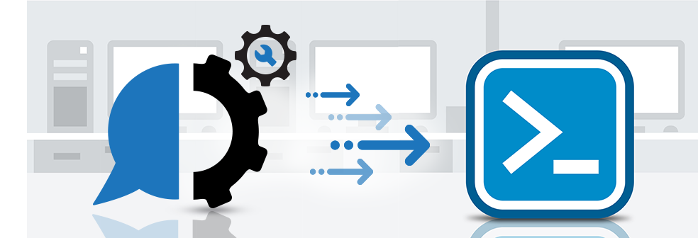

PowerShell Nedir?
PowerShell Nedir? PowerShell Neden Kullanılır?
PowerShell, görevleri otomatikleştirmek ve yapılandırmayı basitleştirmek için güçlü bir araçtır. PowerShell komutları, windows ekosistemindeki active directory ve exchange de dahil olmak üzere hemen hemen tüm görevleri otomatikleştirmek için kullanılabilir. PowerShell programlama sistem yöneticileri ve deneyimli Windows kullanıcıları arasında popüler bir araçtır. Bu makalede “PowerShell Nedir?” sorusu için yanıtlanmaya çalışılacaktır.
PowerShell nedir?
PowerShell, sistem yöneticilerinin eylemleri ve yapılandırmaları otomatikleştirmesini sağlamak amacıyla Microsoft tarafından geliştirilen üst düzey özel bir programlama dilidir. Dil, nesne yönelimli standartlara dayanır ve bir .NET framework desteklidir. C# bilgisi PowerShell öğrenmek için bir ön koşul olmamasına rağmen, genellikle altyapısında C# koduna sahiptir. PowerShell diliyle en yakın karşılaştırma, Linux ortamlarında benzer senaryolarda kullanılan Perl’dir. PowerShell, Microsoft tarafından oluşturulan otomatik bir görev tabanlı komut satırı ve komut dosyası dilidir.
Özellikle sistem yöneticileri için tasarlanmıştır. Linux işletim sistemindeki muadili Bash Script olarak adlandırılır. Diğer shell’lerden farklı olarak, .NET framework CLR (Common Language Runtime) ve DLR (Dynamic Language Runtime) üzerine inşa edilmiştir. Böylece, .NET Framework nesnelerini kabul edebilir ve döndürür. BT profesyonellerinin Windows işletim sisteminin ve Windows sunucu ortamında çalışan diğer uygulamaların yönetimlerini denetlemesine ve otomatikleştirmesine yardımcı olur. PowerShell, yöneticilerin COM ve WMI’ya tam erişim yoluyla uzak ve yerel Windows sisteminde görevleri gerçekleştirmesini sağlar. Diğer birçok Shell gibi, bilgisayar sistemindeki dosya sistemine erişmemizi sağlar. Ayrıca, Windows PowerShell sağlayıcıları, kayıt defteri ve dijital imza sertifika depoları gibi başka bir veri deposuna erişmemizi sağlar.

CMDLET Nedir? PowerShell Programlama
PowerShell programlama dili ile kullanılan her benzersiz işleve cmdlet denir. Bir cmdlet’in bir veya daha fazla tanımlanmış eylem kümesi vardır ve bir .NET nesnesi döndürebilir. PowerShell ile önceden yapılandırılmış olarak gelen en temel cmdlet lerden bazıları, bir klasör yapısında gezinmek ve dosyaları taşımak veya kopyalamak için kullanılanlardır. Cmdlet ismi bazı kaynaklarda command-lets şeklinde de geçebilir. Bu konuda daha fazla bilgi için “PowerShell Cmdlet Nedir?” makalesi okunabilir ve ayrıca “Örnek PowerShell Komutları” makaleleri de ilginizi çekebilir.
PowerShell Neden Kullanılır?
- Hem script dili hem de komut satırı shell’idir.
- Birçok teknolojiyle etkileşime girebilir.
- Windows PowerShell, .NET framework üzerindeki tüm tiplere tam erişim sağlar.
- PowerShell nesne tabanlıdır.
- Microsoftun çeşitli ürünleri için tasarladığı birçok GUI arabirimi, PowerShell için ön uç ara birimleridir.
- VBScript veya diğer script dillerini çalıştırmaktan daha güvenlidir.
- Birden çok komutu birleştirerek ve komut dosyaları yazarak yinelenen görevleri daha verimli gerçekleştirmenizi sağlar. Bir sistem yöneticisinin yüzlerce aktif dizin kullanıcısı oluşturmak istediğini varsayarsak, bunu sadece bir komut dosyasına yerleştirilmiş PowerShell cmdlet lerinin yardımıyla başarabilir.
- Birçok karmaşık ve zaman alıcı yapılandırmaları ve görevleri PowerShell basit cmdletleri ile bir saniye içinde yapılabilir.
- Öğrenmesi ve uygulaması kolaydır.
- Nesne tabanlı bir dildir.
- VBScript ve cmd.exe ile karşılaştırıldığında daha fazla işlev sağlar.
- PowerShell, aynı zamanda önemli bir faktör olan otomasyon platformunu destekler.
- PowerShellde bir .NET kodu da yürütülebilir.
- PowerShellde, bir değişkenin türünü belirtmeye gerek yoktur.
- Aynı zamanda etkileşimlidir. Programcıların önce bir konsolda denemesine ve daha karmaşık komut dosyalarıyla çalışmasına izin verir.
- PowerShell komut dosyasında arka plan işleri (background job) kavramı vardır.
- Yeniden kullanılabilirlik özelliği sağlar. Belirli bir görevi gerçekleştirmek için bir kez yazılan komut dosyaları daha sonra kullanılmak üzere kaydedilebilir ve çeşitli görevleri gerçekleştirmek için diğer komut dosyalarıyla birleştirilebilir. Böylece, görevleri yürütmek için tekrar eden görevler gerçekleştirilebilir. Makinelerin yapılandırılmasında yöneticinin zamandan ve paradan tasarruf etmesini sağlar.

PowerShell Avantajları